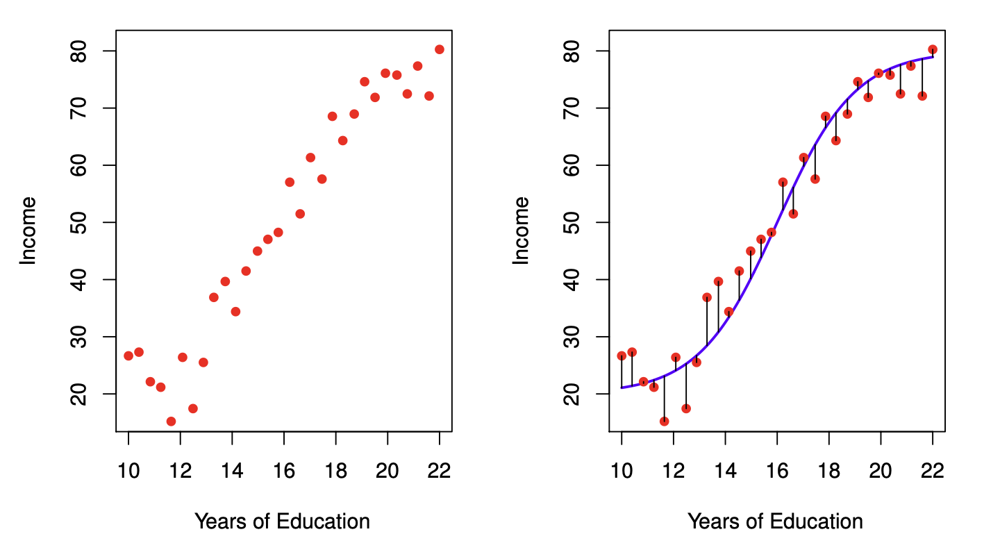

Linear regression in R
Goals of the lecture
- Foundations of statistical modeling.
- Basic goals and assumptions of univariate linear regression.
- Measuring error.
- Linear regression in R with
lm.- Interpreting
lmmodel outputs: coefficients, p-values, and \(R^2\).
- Interpreting
Part 1: Modeling
What are “models”, and why should we build them?
From descriptions to models
A statistical model is a mathematical model representing a data-generating process.
- So far, we’ve focused on describing and visualizing data.
- But often, we want to model our data.
- Typically involves learning some function mapping \(X\) to \(Y\).
- All models are wrong, but some are useful.
Why models?
Statistical models help us understand our data, and also predict new data.
- Prediction: Try to predict/estimate unseen values of \(Y\), given \(X\).
- Inference: Try to understand how and why \(X\) relates to \(Y\), test hypotheses, and more.
Note
Both serve a useful function, and both are compatible! In general, models can help you think more clearly about your data.
Models encode functions
A statistical model often represents a function mapping from \(X\) (inputs) to \(Y\) (outputs).
\(Y = \beta X + \epsilon\)
- \(Y\): What we want to predict.
- \(X\): The features we’re using to predict \(Y\).
- \(\beta\): The coefficients (or weights) mapping \(X\) to \(Y\).
- \(\epsilon\): Residual variance or “error”.
üí≠ Check-in
Think of a research question from your domain. What would the \(X\) and \(Y\) be, if it was “translated” into a statistical model?
Models aren’t perfect
No model is perfect; all models have some amount of prediction error, typically called residuals or error.

Models have trade-offs
In general, there is often a trade-off between the flexibility of a model and the interpretability of that model.
- More flexible models can learn more complex functions/relationships, but they are often harder to interpret.
- They’re also more likely to **overfitt*.
- Less flexible models (e.g., linear regression) have higher bias, but are often easier to interpret, and less likely to overfit.
Part 2: Univariate linear regression
Linear equation, basic premise, key assumptions.
Linear regression: basics
The goal of linear regression is to find the line of best fit between some variable(s) \(X\) and the continuous dependent variable \(Y\).
- Assuming a linear relationship between \(X\) and \(Y\)…
- …find parameters \(\beta\) that minimize prediction error.
- Allows for many predictors, but we’ll start with univariate regression: a *single predictor (variable).
The line of best fit
Given some bivariate data, there are many possible lines we could draw. Each line is defined by the linear equation:
\(Y = \beta_1 X_1 + \beta_0\)
- \(\beta_0\): Intercept.
- \(\beta_1\): Slope for \(X_1\).
The best-fitting line (pt. 1)
To illustrate this, let’s simulate some data:
The best-fitting line (pt. 2)
Now let’s plot different lines with the same slope but different intercepts.
# Create the plot
ggplot(df, aes(x = x, y = y)) +
# Add several "possible" lines
geom_abline(intercept = 2, slope = 0.5, color = "gray60", linetype = "dashed", linewidth = 1) +
geom_abline(intercept = 3, slope = 0.5, color = "gray60", linetype = "dashed", linewidth = 1) +
geom_abline(intercept = 4, slope = 0.5, color = "gray60", linetype = "dashed", linewidth = 1) +
# Add data points
geom_point(color = "steelblue", size = 3, alpha = 0.7) +
theme_minimal() The best-fitting line (pt. 3)
We can also try the same intercept but different slopes.
# Create the plot
ggplot(df, aes(x = x, y = y)) +
# Add several "possible" lines
geom_abline(intercept = 3, slope = 0.75, color = "gray60", linetype = "dashed", linewidth = 1) +
geom_abline(intercept = 3, slope = 0.5, color = "gray60", linetype = "dashed", linewidth = 1) +
geom_abline(intercept = 3, slope = 0.25, color = "gray60", linetype = "dashed", linewidth = 1) +
# Add data points
geom_point(color = "steelblue", size = 3, alpha = 0.7) +
theme_minimal() 
Some lines are better than others
The line of best fit minimizes the residual error, i.e., the difference between the predictions (the line) and the actual values.
\(RSS = \sum_{i=1}^{N} (\hat{y_i} - y_i^2)\)
- For each data point \(i\), subtract the actual value \(y_i\) from the predicted value \(\hat{y_i}\).
- Then, square that difference.
- Then, sum all those squared differences.
Tip
Intuition: A “better” line is one that has smaller differences between the predicted and actual values.
MSE: Mean-squared error
The mean-squared error (MSE) is the average squared error (as opposed to the sum).
- Calculate \(RSS\).
- Then, divide by \(N\).
- Note that RMSE is the root of MSE.
Calculating MSE for a line
We can compare the MSE for two different lines for the same data.
Standard error of the estimate
The standard error of the estimate is a measure of the expected prediction error, i.e., how much your predictions are “wrong” on average.
\(S_{Y|X} = \sqrt{\frac{RSS}{n-2}}\)
- How much, on average, do we expect \(\hat{Y}\) to deviate from \(Y\)?
- A smaller number means a better fit.
Calculating standard error of the estimate
We can calculate standard error of the estimate:
Evaluating with R-squared
The \(R^2\), or coefficient of determination, measures the proportion of variance in \(Y\) explained by the model.
\(R^2 = 1 - \frac{RSS}{SS_Y}\)
Where \(SS_Y\) is the sum of squared error in \(Y\).
üí≠ Check-in
What does this formula mean and why does it measure the proportion of variance in \(Y\) explained by the model?
Decomposing \(R^2\)
\(R^2 = 1 - \frac{RSS}{SS_Y}\)
- \(RSS\) refers to the unexplained (residual) variance in \(Y\) from the model.
- \(SS_Y\) is the total variance in \(Y\) (i.e., before even fitting the model).
- Thus, \(\frac{RSS}{SS_Y}\) captures the proportion of unexplained variance by the model.
- If \(\frac{RSS}{SS_Y} = 1\), the model has explained no variance.
- If \(\frac{RSS}{SS_Y} = 0\), the model has explained all variance.
- And \(1 - \frac{RSS}{SS_Y}\) captures the proportion of explained variance.
Key assumptions of linear regression
Ordinary least squares (OLS) regression has a few key assumptions.
| Assumption | What it means | Why it matters |
|---|---|---|
| Linearity | The relationship between \(X\) and \(Y\) is linear | OLS fits a straight line, so if the true relationship is curved, predictions will be systematically biased |
| Independence | The observations are independent of each other | Dependent observations (e.g., repeated measures, time series) violate the assumption that errors are uncorrelated, leading to underestimated standard errors and invalid p-values |
| Homoscedasticity | The variance of residuals is constant across all levels of \(X\) (equal spread) | If variance changes with \(X\) (heteroscedasticity), standard errors will be incorrect: some coefficients appear more/less significant than they truly are |
| Normality of residuals | The errors are approximately normally distributed | Needed for valid confidence intervals and hypothesis tests (p-values). Less critical with large samples due to the Central Limit Theorem. |
Interim summary
- In statistical modeling, we aim to construct models of our data.
- Linear regression is a specific (high-bias) model.
- The goal of linear regression is to identify the best-fitting line for our data, i.e., to reduce the residual sum of squares (RSS).
- Linear regression rests on a few assumptions about the data (more on this in an upcoming lecture).
Part 3: Linear regression in R
Using and interpreting fit lm models, using broom.
The lm function
A linear model can be fit using the
lmfunction.
- Supply a formula (i.e.,
y ~ x). - Supply the data (i.e., a dataframe).
- Usage:
lm(data = df_name, y ~ x).- Where
yandxare columns indf_name.
- Where
Loading a dataset
To illustrate linear regression in R, we’ll work with a sample dataset.
Visualizing the model fit
As we discussed before, geom_smooth(method = "lm") can be used to plot a regression line over your data.
Tip
But to actually fit a model, we need to use lm.
Fitting an lm model
Calling summary on a fit lm model object returns information about the coefficients and the overall model fit.
Call:
lm(formula = Income ~ Education, data = df_income)
Residuals:
Min 1Q Median 3Q Max
-19.568 -8.012 1.474 5.754 23.701
Coefficients:
Estimate Std. Error t value Pr(>|t|)
(Intercept) -41.9166 9.7689 -4.291 0.000192 ***
Education 6.3872 0.5812 10.990 1.15e-11 ***
---
Signif. codes: 0 '***' 0.001 '**' 0.01 '*' 0.05 '.' 0.1 ' ' 1
Residual standard error: 11.93 on 28 degrees of freedom
Multiple R-squared: 0.8118, Adjusted R-squared: 0.8051
F-statistic: 120.8 on 1 and 28 DF, p-value: 1.151e-11Understanding summary output
Calling summary returns information about the coefficients of our model, as well as indicators of model fit.
Estimate Std. Error t value Pr(>|t|)
(Intercept) -41.916612 9.7689490 -4.290801 1.918257e-04
Education 6.387161 0.5811716 10.990148 1.150567e-11[1] 0.8118069- Estimate: fit intercept and slope coefficients.
- Std. Error: estimated standard error for those coefficients.
- t value: the t-statistic for those coefficients (slope / SE).
- p-value: the probability of obtaining a t-statistic that large assuming the null hypothesis.
- Multiple R-squared: proportion of variance in
yexplained byx. - Residual standard error: The standard error of the estimate.
Interpreting coefficients
There are a few relevant things to note about coefficients:
- The estimate tells you the direction (sign) and degree (magnitude) of the relationship.
- The p-value tells you whether a relationship of this size would be expected assuming there was no effect (i.e., the null hypothesis).
- More on this in an upcoming lecture!
üí≠ Check-in
How would you report and interpret the intercept and slope we obtained for Income ~ Education? (As a reminder, \(\beta_0 = -41.9\) and \(\beta_1 = 6.4\).)
The broom package
The broom package is also an easy way to quickly (and tidily) extract coefficient estimates.
# A tibble: 2 × 5
term estimate std.error statistic p.value
<chr> <dbl> <dbl> <dbl> <dbl>
1 (Intercept) -41.9 9.77 -4.29 1.92e- 4
2 Education 6.39 0.581 11.0 1.15e-11Plotting coefficients
Once coefficients are in a dataframe, we can plot them using ggplot: a great way to visualize model fits!
Overall model fit with glance
broom::glance() provides a tidy summary of overall model statistics.
# A tibble: 1 × 12
r.squared adj.r.squared sigma statistic p.value df logLik AIC BIC
<dbl> <dbl> <dbl> <dbl> <dbl> <dbl> <dbl> <dbl> <dbl>
1 0.812 0.805 11.9 121. 1.15e-11 1 -116. 238. 242.
# ℹ 3 more variables: deviance <dbl>, df.residual <int>, nobs <int>r.squared: proportion of variance explainedadj.r.squared: adjusted for number of predictorssigma: residual standard errorp.value: p-value for the F-statistic
Using lm with %>%
If you like the %>% syntax, you can integrate lm into a series of pipe operations.
# A tibble: 2 × 5
term estimate std.error statistic p.value
<chr> <dbl> <dbl> <dbl> <dbl>
1 (Intercept) -41.9 9.77 -4.29 1.92e- 4
2 Education 6.39 0.581 11.0 1.15e-11Making predictions
Once we’ve fit a model, we can use it to make predictions for new data!
Visualizing residuals
We can also assess the residuals.
What about categorical predictors?
A categorical (or qualitative) variable takes on one of several discrete values.
# A tibble: 3 × 2
Condition RT
<chr> <dbl>
1 Congruent 12.1
2 Congruent 16.8
3 Congruent 9.56üí≠ Check-in
How might you model and interpret the effect of a categorical variable?
Contrast coding
A common approach is to use the mean of one level (e.g., Congruent) as the intercept; the slope then represents the difference in means across those levels.
Conclusion
- Linear regression is a foundational tool in your modeling toolbox.
- R simplifies fitting and interpreting regressions:
lm: fit the model.summary/broom::tidy/broom::glance: interpret the model coefficients and \(R^2\).predict: get predictions from the model.
- Next time, we’ll discuss advanced issues, like multiple predictors.
CSS 211 | UC San Diego